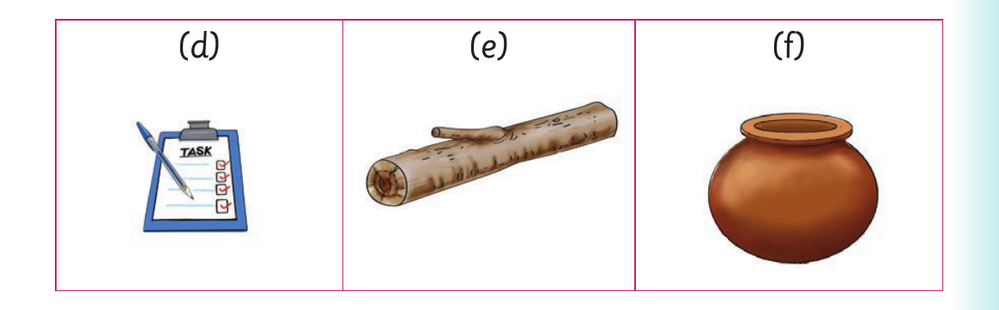
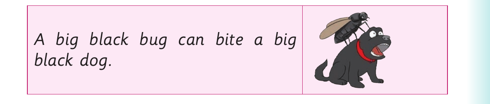

Replacing middle sounds - continued

(d), a picture of a writing pad with a pen. (e), a picture of a log. (f), a picture of a pot.
Activity 2
1. Pronounce or sign the following words: pan , mud , ten , bat , bed , jet , cat , fun and bun .
2. Replace the middle sound of each word in (1). Or replace the middle letter of each word in (1) and sign the words.
3. Pronounce or sign the new words you have formed in (2).
4. Read aloud or sign the following sentences: (a) He looks mad in the mud. (b) A bat does not bet. (c) That is a bad bed. (d) Do not put a pen in a pan. (e) A football fan is having fun. (f) A cat can cut meat with teeth. (g) A jet must jut out on one side.
5. Read the following tongue twister fast:

A big black bug can bite a big